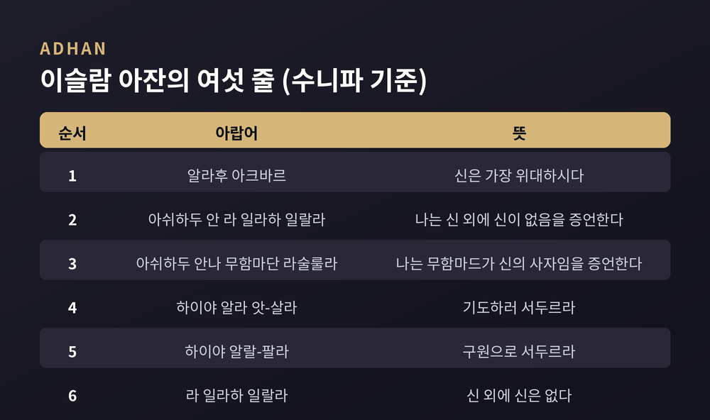
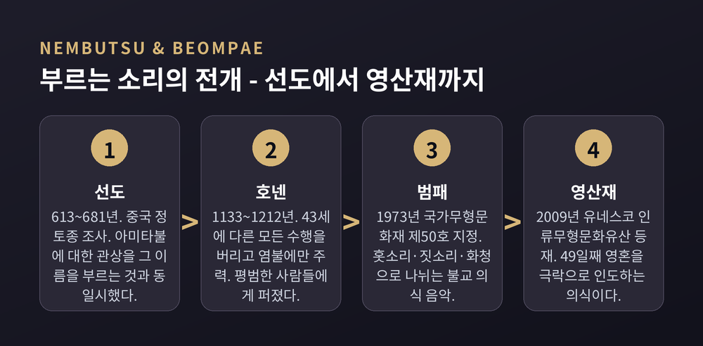
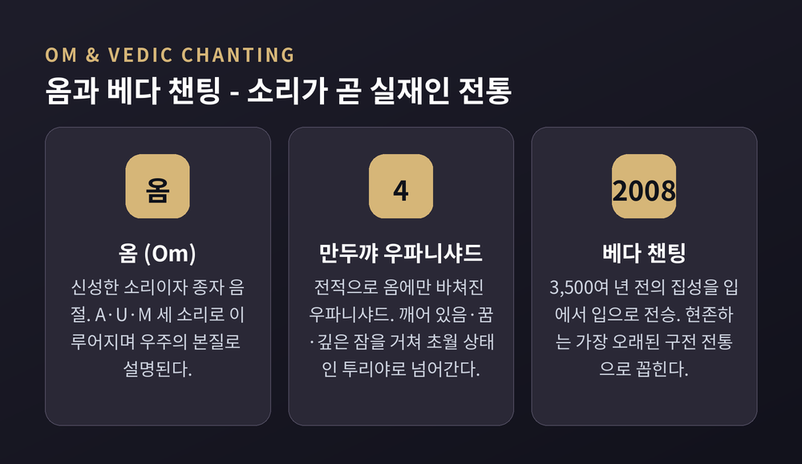

이번 글에서는 세계 종교가 믿음을 소리로 전해 온 방식을 정리해 보겠습니다. 가톨릭의 그레고리오 성가, 이슬람의 아잔과 꾸란 낭송, 불교의 염불과 범패, 힌두교의 옴과 베다 챈팅, 유대교의 성경 낭송, 개신교의 회중 찬송이 대상입니다. 왜 종교는 하필 소리를 택했는가라는 질문을 밑에 깔고 갑니다.
한 가지 밝혀두겠습니다. 이 글은 비교종교학의 교양적 관점에서 쓴 것입니다. 어느 전통의 소리가 더 거룩한지 가리지 않습니다.
종교학에서 소리는 비교적 최근에 독립된 연구 영역이 되었습니다. 오하이오주립대와 미시간주립대가 함께한 American Religious Sounds Project는 8년에 걸친 연구 끝에 인터랙티브 청각 전시를 내놓았습니다.
이 프로젝트의 문제의식은 한 문장으로 압축됩니다. "소리는 이동하기 때문에, 텍스트와 제도를 넘어선 방식으로 종교 실천을 사고하게 해준다."
학계가 정리한 소리의 기능은 대략 세 갈래입니다.
첫째, 공동체를 만듭니다. 학술지 『Religions』의 2024년 특집은 소리가 "종교적·정서적 공동체의 구성"에 관여하며, 주변음이 "공동체적 소속과 의례 실천의 사운드트랙"으로 기능한다고 봅니다.
둘째, 기억을 나릅니다. 문자보다 먼저 있었고, 문자가 생긴 뒤에도 남았습니다.
셋째, 의식 상태를 바꿉니다. 같은 특집은 뮤지킹이 변성 의식 상태를 촉진하고 영적 세계와의 소통을 매개한다고 봅니다. 샤머니즘의 챈팅부터 현대 음악치료까지, 민족지 연구들은 소리의 질감이 정서적 안녕과 영적 연결감을 강화한다고 보고합니다.
국제전통음악무용협의회에는 '신성하고 영적인 소리와 실천' 연구분과가 따로 있습니다. 이 분야가 이미 제도화된 학문 영역이라는 뜻입니다.
그레고리오 성가는 로마 가톨릭 교회의 단선율 전례 음악입니다. 미사와 성무일도의 텍스트에 붙습니다.
브리태니커는 이 음악을 이렇게 설명합니다. 엄격한 리듬이 없는 단일 선율선. 반주 없는 무반주 성가. 다성음악과 구별되는 지점이 여기입니다.
이름은 교황 그레고리오 1세에게서 왔습니다. 재위 기간은 590년부터 604년까지입니다. 그의 재위 중에 성가가 수집·정리되었다고 오래 여겨졌습니다.
여기에 전설 하나가 따라붙습니다. 성령이 흰 비둘기의 모습으로 그레고리오 1세에게 나타나 성가를 불러주었다는 이야기입니다.
그런데 현대 학계의 견해는 다릅니다.
브리태니커조차 그레고리오 성가가 9~10세기 서·중부 유럽에서 주로 발전했고 이후 가필과 개정을 거쳤다고 적습니다. 빌리 아펠과 로버트 스노 등의 연구에 근거한 통설은 더 구체적입니다. 약 750년경 카롤링거 왕조가 프랑스에서 주도한 로마 성가와 갈리아 성가의 종합에서 나왔다는 것입니다.
그레고리오 1세 시대에는 대부분의 선율이 아직 존재하지 않았고, 네우마 기보 체계도 확립되기 전이었다는 점이 근거로 제시됩니다. 그레고리오 1세에게 돌린 것은 신성한 계보를 부여하려는 일종의 "마케팅 책략"이었다는 해석입니다.
정치도 얽혀 있습니다. 프랑크 왕 샤를마뉴는 768년부터 814년까지 재위하며 자기 왕국에 그레고리오 성가를 강제했습니다. 당시 그 지역에서는 갈리아 성가라는 다른 전통이 쓰이고 있었습니다. 8~9세기에 걸쳐 두 성가 사이에 동화가 일어났습니다.
하나의 제국에 하나의 소리를 두려는 시도였던 셈입니다.
이 대목이 개인적으로 가장 흥미롭습니다.
서방 성가의 최초 기보는 9세기에 등장합니다. 선 없는 네우마였고, 가사 위에 자유로운 물결선처럼 그려졌습니다.
문제는 이 네우마가 정확한 음정을 알려주지 않았다는 점입니다. 선율의 대략적 방향과 윤곽만 표시하는 기억 보조 장치였습니다. 제대로 부르려면 스승에게 직접 배워야 했습니다.
구이도 다레초가 등장합니다. 991년 무렵 태어나 1050년 무렵 세상을 떠난 이탈리아 베네딕도회 수도사이자 음악 이론가였습니다.
그는 4선 보표를 도입했습니다. 정확한 음높이 표기가 가능해졌고, 기준점을 고정하는 문자도 함께 썼습니다. 오늘날의 음자리표가 여기서 나왔습니다. 그레고리오 성가 악보는 지금도 4선을 씁니다.
결과는 조용한 혁명이었습니다. 가수가 한 번도 들어본 적 없는 선율을 악보만 보고 부를 수 있게 된 것입니다.
서양 음악 기보법은 세속의 필요가 아니라 전례 성가를 정확히 전승하려는 필요에서 태어났습니다.
무함마드는 622년 메디나로의 히즈라 직후 아잔을 제정했습니다.
처음에는 소박했습니다. 그저 "기도하러 오라"였습니다. 전승에 따르면 무함마드가 이 부름에 더 큰 위엄을 주려고 추종자들과 상의했고, 압둘라 이븐 자이드가 모스크 지붕에서 외치는 이가 신자들을 소집해야 한다는 꿈을 꾸면서 정리되었습니다.
최초의 무앗진은 빌랄 이븐 라바흐입니다. 부모가 아비시니아, 곧 지금의 에티오피아 출신인 해방 노예였습니다. 무함마드의 초기 추종자였고, 전승은 그가 무함마드 가족 외에는 아부 바크르 다음 두 번째 신자였다고 전합니다. 630년 메카 정복 뒤 카바 위에서 아잔을 외쳤다고 알려져 있습니다.
수니파 아잔의 여섯 줄은 이렇습니다.
알라후 아크바르 — 신은 가장 위대하시다. 아쉬하두 안 라 일라하 일랄라 — 나는 신 외에 신이 없음을 증언한다. 아쉬하두 안나 무함마단 라술룰라 — 나는 무함마드가 신의 사자임을 증언한다. 하이야 알라 앗-살라 — 기도하러 서두르라. 하이야 알랄-팔라 — 구원으로 서두르라. 라 일라하 일랄라 — 신 외에 신은 없다.
여섯 줄 안에 신관과 예언자관과 실천 명령이 모두 들어 있습니다. 하루 다섯 번, 도시 전체가 이 여섯 줄을 듣습니다.
교리서는 읽어야 하지만, 아잔은 그냥 들립니다.

꾸란 낭송 연구의 고전은 크리스티나 넬슨의 『The Art of Reciting the Qur'an』입니다. 텍사스대 출판부에서 나왔습니다.
이 책의 목표가 인상적입니다. 꾸란을 근본적으로 구술적 현상으로 이해하도록 초점을 되돌리는 것.
넬슨은 타지위드의 엄정한 음성학적·리듬적 체계 위에 선율을 즉흥적으로 얹는 법을 몸으로 익혔습니다. 마캄이라 불리는 선율 선법들을 부르고 식별하는 법도 배웠습니다.
타지위드는 낭송의 규칙입니다. 낭송자는 아흐캄 알-타지위드를 모두 따라야 합니다. 그런데 넬슨과 마이클 프리시코프의 인터뷰에는 이런 대목이 있습니다.
"다만 규칙을 따르는 한, 그들에게는 상당한 재량이 있다."
규칙이 자유를 없애지 않습니다. 자유가 놓일 자리를 만듭니다.
스타일은 크게 둘로 갈립니다. 무랏탈은 절제된 낭송입니다. 아랍어 라디오의 정규 프로그램에서 5분 남짓입니다. 무자와드는 장식적이고 예술적입니다. 낭송자가 텍스트를 조금씩 나아가며 구절을 자유롭게 반복합니다. 방송에서 수 시간까지 이어지기도 합니다. 아랍어 라디오 방송국들은 무자와드로 방송을 열고 닫습니다.
여기서 신중해야 할 대목이 있습니다.
초기 이슬람 시대부터 무슬림 세계에서는 음악의 성격과 허용 여부를 두고 논쟁이 이어져 왔습니다. 지금도 정리되지 않았습니다.
엄격한 입장이 있습니다. 이븐 타이미야는 『파타와』에서 "네 이맘의 마드하브는 모든 유흥용 악기가 하람이라는 것"이라고 확언했습니다. 네 이맘 사이에 악기 금지 합의가 있다는 견해입니다.
완화된 입장도 있습니다. 악기가 음주 모임의 상징 중 하나라면 하람이지만 다른 악기는 허용된다는 것입니다. 이집트 다르 알-이프타는 이 방향의 파트와를 제시합니다.
사마, 곧 '들음'을 두고도 갈립니다. 이븐 타이미야는 사마에 여러 종류가 있고 그중 일부는 권장되지 않거나 금지된다고 논했습니다. 반면 수니파 법학자이자 신비주의자였던 알-가잘리는 『종교학의 부흥』에서 사마에 관한 유명한 장을 남겼습니다.
저는 어느 쪽이 옳다고 말할 자격이 없습니다.
다만 학자들이 대체로 이견을 두지 않는 영역은 분명합니다. 선율적 음조로 꾸란을 낭송하는 것, 아잔, 순례 챈트, 종교적이거나 고결한 주제의 시와 노래, 자장가와 결혼식·이드 음악, 노동요, 여행에서 돌아온 이를 맞는 노래, 군악대 음악입니다.
아잔과 꾸란 낭송이 이 논쟁의 바깥에 있는 이유는 범주에 있습니다. 아랍어 용어법에서 이것들은 대체로 '음악'이 아니라 '낭송'입니다. 우리 귀에는 노래로 들리지만, 그 전통 안에서는 다른 이름으로 불립니다.
이름이 다르면 규칙도 다릅니다.
시나고그의 성경 낭독을 챈팅하는 방식을 카닐레이션이라 부릅니다. 트로프, 또는 테아밈이라고도 합니다.
히브리어 타암은 이유, 의미, 맛으로 번역될 수 있습니다.
유대신학교의 설명은 간명합니다. 카닐레이션은 성경 본문의 단어를 특정 음형 패턴에 맞추는 고대의 방법이며, 음악적 표현과 문법적 명료성을 동시에 텍스트에 더한다는 것입니다.
문법적 명료성이라는 말에 밑줄을 긋고 싶습니다.
각 성경 단어는 고유한 악센트 기호, 곧 타암을 지닙니다. 이것이 짧은 선율로 발성됩니다. 타암은 강세 음절을 지시하는데, 강세 위치는 단어의 의미를 바꿀 수 있습니다. 나아가 뒤따르는 단어와의 연결 또는 분리를 신호해 절에 통사를 부여합니다.
선율이 장식이 아닙니다. 문장 부호이자 주석입니다. 어떻게 부르느냐가 무슨 뜻이냐를 결정합니다.
역사도 깁니다. 토라 카닐레이션은 현존하는 가장 오래된 유대 종교음악 장르로 꼽힙니다. 시나고그 예배에서 칸토르의 중요성은 제1성전 시대까지 거슬러 올라갑니다. 지금 쓰이는 카닐레이션 기호는 적어도 9~10세기의 것으로, 티베리아스와 예루살렘과 바빌론에서 활동한 마소라 학자들의 시대에 해당합니다.
한 가지 더 있습니다. 트로프는 하나가 아닙니다.
예멘, 페르시아, 서방 세파르디, 동방 세파르디, 부하라의 전통이 각각 다릅니다. 여기에 동유럽 관행의 연장으로 북미에 널리 퍼진 아슈케나지 트로프가 더해집니다.
같은 텍스트, 다른 소리. 이 다양성이 오히려 전승이 살아 있다는 증거로 읽힙니다.
나무아미타불은 "아미타불께 귀의합니다"라는 뜻입니다. 이 구절을 염불이라 부릅니다. 정토종은 이 구절을 부르는 것만으로 아미타불의 정토에 왕생할 수 있다고 봅니다.
전환점은 중국의 선도였습니다. 613년에 나서 681년에 입적한 정토종 조사입니다. 그는 아미타불에 대한 관상을 그 부처의 이름을 부르는 것과 동일시하며 이 실천을 정립했습니다.
생각하기와 소리내기가 같아진 순간입니다.
일본에서는 천태종의 엔닌이 중국에서 염불을 들여왔고, 이것이 뒷날 정토 운동의 기초가 되었습니다.
결정적 인물은 호넨입니다. 1133년에 나서 1212년에 입적했습니다. 천태종에 실망한 승려였고, 43세에 다른 모든 수행의 의례적 준수를 버리고 오직 염불에만 주력했습니다. 『선택본원염불집』을 써서 염불 외의 모든 수행을 논박했습니다.
그의 가르침은 단순합니다. 완전한 신뢰를 가지고 나무아미타불을 부르는 것. 가장 비천한 사람조차 그것만으로 구원받는다는 것.
이 가르침은 특히 평범한 사람들 사이에서 크게 퍼졌습니다.
소리는 문턱을 낮추는 기술입니다. 글을 몰라도, 교리를 몰라도 부를 수 있습니다.
한국에는 범패가 있습니다. 불교 의식에서 불보살을 찬탄하거나 경전을 노래로 읊는 의식 음악입니다.
크게 홋소리와 짓소리, 화청으로 나뉩니다. 홋소리는 단정하고 엄숙한 가락으로 경전의 내용을 노래합니다. 짓소리는 보다 길고 장중한 선율로 불보살을 찬탄합니다.
한국 범패의 고유함을 짚은 연구가 있습니다. 하와이대 이병원 교수는 중국과 일본의 불교의식에 홋소리와 짓소리에 해당하는 신축성 있는 양식이 없다는 점을 지적합니다. 홋소리에서는 핵선율을 크게 세 번, 보통으로 세 번, 잘게 세 번 반복하며 패턴을 줄여 나가는 '잣는소리'가 두드러지는데, 이것이 한국 범패의 특징이라는 것입니다.
범패는 가곡, 판소리와 함께 한국 3대 성악곡으로 꼽힙니다. 1973년 국가무형문화재 제50호로 지정되었습니다.
범패가 중심에 놓이는 의식이 영산재입니다. 고인의 영혼을 사후 49일째 극락으로 인도하는 불교 의식입니다. 2009년 9월 30일, 아랍에미리트 아부다비에서 열린 제4차 무형유산보호정부간위원회에서 유네스코 인류무형문화유산 대표목록에 등재되었습니다.
주목할 점은 범패가 승려의 노래에 그치지 않는다는 것입니다. 소리인 범패와 몸짓인 작법, 그리고 괘불과 가람 구조가 만드는 공간 장엄이 결합한 종합예술입니다. 영산재의 범패는 고인의 극락왕생을 기원하는 동시에 산 자에게 불법을 전하는 공동체 의례로 기능합니다.
소리는 혼자 작동하지 않습니다. 몸짓과 공간과 함께 하나의 환경을 만듭니다.

옴은 힌두교를 비롯한 인도 종교들에서 신성한 소리이자 종자 음절이며 만트라입니다. 지고의 절대자, 의식, 아트만, 브라흐만, 우주 세계의 본질로 설명됩니다.
『만두꺄 우파니샤드』는 가장 짧지만 가장 심오한 우파니샤드 중 하나로 꼽힙니다. 그리고 전적으로 옴에만 바쳐졌습니다.
중심 주제는 음절 옴을 통해 브라흐만의 신비가 한 점으로 모인다는 것입니다. 옴을 깨어 있음과 꿈과 깊은 잠이라는 세 상태로 다룬 뒤, 네 번째인 투리야로 넘어갑니다. 투리야는 순수한 지복의 경험인 초월적 상태입니다.
음절은 A와 U와 M 세 소리로 이루어집니다. A는 시작 — 우주와 그 안의 모든 것의 창조를 나타냅니다. 옴은 드러난 모든 것을 상징하면서 동시에 드러나지 않은 것에 기원을 둡니다.
여기서 소리는 신을 부르는 도구가 아닙니다. 실재 그 자체입니다.
베다 챈팅은 더 놀랍습니다.
유네스코는 2008년 11월 7일 베다 챈팅 전통을 인류 구전 및 무형유산 걸작으로 선포했고, 같은 해 인류무형문화유산 대표목록에 등재했습니다.
베다는 3,500여 년 전에 지어진 방대한 산스크리트 시가와 철학적 대화, 신화, 의례 주문의 집성입니다. 그런데 이것이 수천 년 동안 스승에서 제자로 입에서 입으로 전해졌습니다.
이유가 인상적입니다. 정확성을 보장하고 원음의 왜곡을 막기 위해서였습니다. 이를 위해 파타라 불리는 서로 다른 낭송 방식들을 썼습니다. 수행자들은 어린 시절부터 성조 악센트와 각 글자의 고유한 발음법, 특정한 발화 조합에 기반한 복잡한 낭송 기법을 배웁니다.
슈루티라 불리는 이 구전 전통은 현존하는 가장 오래된, 끊기지 않은 구전 전통으로 여겨집니다.
문자를 몰라서 입으로 전한 것이 아닙니다. 정확하려고 입으로 전했습니다.
노래는 헌신의 형태로도 나타납니다. 바잔은 박티 운동 중에 결정화되었습니다. 대략 15세기에서 17세기, 북인도와 서인도의 헌신적 시인-성자들이 공동 노래를 위한 단순하고 정서적으로 직접적인 노래를 지었습니다.
뿌리는 더 깊습니다. 6세기경 타밀의 알바르와 나야나르에서 시작되었고, 12세기 이후 타밀 지역 바깥으로 퍼졌습니다.
박티 운동의 추종자들은 종교 의례의 독단적 성격에 반대했고, 신은 편재하며 형상이나 모습을 필요로 하지 않는다고 주장했습니다.
바잔과 키르탄은 결이 다릅니다. 바잔은 대체로 친밀하고 명상적인 곡으로, 독창이나 소규모 그룹이 부릅니다. 키르탄은 회중적 실천이며, 묻고 답하는 형식의 서사적 챈팅을 수반합니다.

같은 기독교 안에서 소리의 정치학이 뒤집힌 사례가 있습니다.
중세 동안 자기 신앙을 노래한다는 발상은 사라져 있었습니다. 가톨릭 예배가 라틴어로만 제공되었고, 사회 대부분이 문맹이었기 때문입니다. 교구민들은 예배를 이해할 수도, 참여할 수도 없었습니다.
루터의 만인사제직 선언은 필연적으로 평신도의 예배 참여를 함의했습니다. 그리고 이는 회중 찬송을 불가피하게 만들었습니다.
루터는 회중 찬송, 곧 코랄을 전례의 통합적이고 필수적인 부분으로 보았습니다. 여기서 사람들은 찬양과 신앙의 상호 표현으로 함께 모입니다. 한 연구자의 표현을 빌리면 이것은 "만인사제직의 단순하고 실천적이며 전례적인 시연"입니다.
루터는 신약 번역을 마친 뒤 1523년부터 독일어 찬송가를 짓기 시작했습니다. 이유를 직접 밝혔습니다.
"하나님의 말씀이 음악의 형태로도 백성 가운데 있게 하기 위하여."
그가 남긴 독일어 원작 찬송가는 주로 1523년에서 1543년 사이에 지어진 약 37곡입니다. 서방 기독교 예배가 모국어 텍스트와 노래를 통한 능동적 평신도 참여로 향하는 근본적 전환이었습니다.
예전엔 훈련된 소수가 라틴어로 부르는 소리였습니다. 지금은 모두가 자기 말로 부르는 소리입니다.
한 가지 아쉬운 이야기도 덧붙이겠습니다.
19세기에 그레고리오 성가를 되살리려는 움직임이 있었습니다. 돔 프로스페르 게랑제가 1833년 솔렘 수도원을 세웠습니다. 완전히 노래로 드리는 성무일도와 미사를 포함한 수도 생활의 거점이었습니다. 솔렘의 수도사들은 고대 필사본을 파고들어 성가의 고유한 선율과 리듬을 복원했습니다.
제2차 바티칸 공의회의 「전례헌장」 116항은 이렇게 적었습니다. 교회는 그레고리오 성가를 로마 전례에 특별히 적합한 것으로 인정하며, 다른 조건이 같다면 전례 행위에서 그것에 으뜸 자리를 주어야 한다는 것입니다.
그런데 현실은 달랐습니다.
지난 50여 년간 그레고리오 성가가 전 세계 가톨릭 본당에서 거의 사라졌다는 지적이 있습니다. 대중문화와 연관된 음악 형식으로 대체되었다는 것입니다.
원인 진단은 갈립니다. 공의회를 원인으로 보는 시각이 있는 반면, 공의회 문헌 자체는 성가의 자리를 오히려 재확인했으므로 문제는 문헌이 아니라 실행에 있었다는 반론도 있습니다.
정답이 하나로 모이지 않았습니다. 저는 이 미결 상태를 그대로 두는 편이 정직하다고 생각합니다.
정리하면 이렇습니다.
여섯 전통을 나란히 놓고 보니 되풀이되는 무늬가 보입니다. 소리는 문턱을 낮춥니다. 염불이 그랬고 코랄이 그랬습니다. 소리는 정확합니다. 베다가 그랬고 트로프가 그랬습니다. 소리는 공간을 채웁니다. 아잔이 그랬고 영산재가 그랬습니다.
물론 이 무늬는 제가 밖에서 그은 선입니다. 각 전통 안에서 그 소리가 무엇인지는 또 다른 이야기일 것입니다. 이 글이 닿을 수 있는 곳은 거기까지입니다.
그래도 한 가지는 분명해 보입니다. "믿음은 읽히기 전에 들렸습니다."
문자보다 먼저 있었고, 문자가 생긴 뒤에도 남았습니다. 왜 그랬겠냐고 물으신다면, 아마 소리만이 같은 순간에 여러 사람의 몸을 동시에 통과할 수 있기 때문이라고 답하겠습니다.